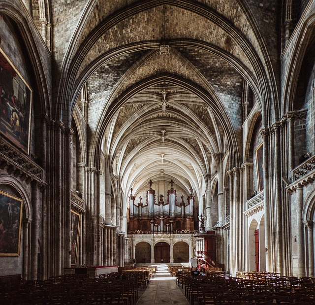
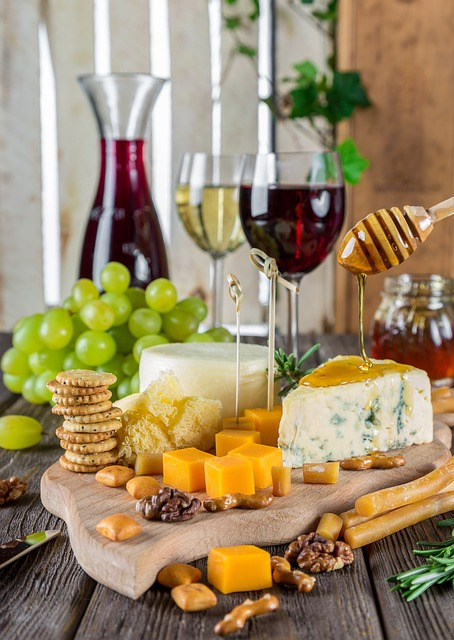
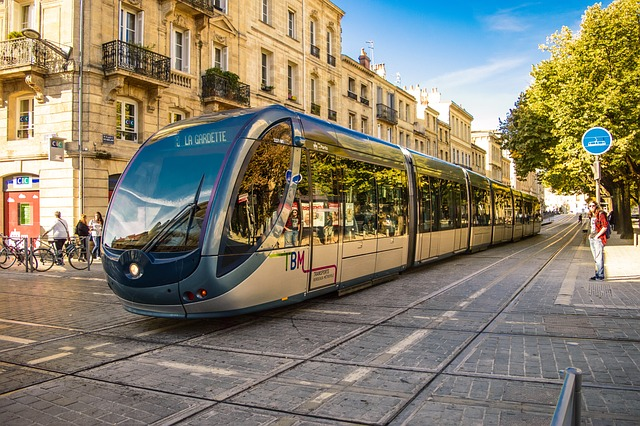

Quelques informations sur la ville de Bordeaux :
- Situation géographique : Située dans le sud-ouest de la France, près de l'océan Atlantique.
- Population : Environ 250 000 habitants, avec une agglomération dépassant les 800 000 habitants.
Attractions touristiques :
 ;
;
- La Place de la Bourse : célèbre pour son architecture classique et le Miroir d'eau.
- La Cité du Vin : un musée moderne dédié au vin et à sa culture.
- Le Palais Rohan : l'hôtel de ville avec une belle architecture.
- Les quais de la Garonne : parfaits pour des promenades au bord de l'eau.
Culture :
;
- Ville dynamique avec de nombreux festivals, comme le Festival du vin.
- Bordeaux compte douze musées, dont six municipaux, dédiés aux beaux-arts, à l'art contemporain et aux Arts décoratifs et au Design,
mais aussi à l'histoire naturelle, à l'archéologie, à l'ethnographie ou encore à l'histoire des douanes et à l'histoire régionale.
- De nombreux établissements privés, institutions ou associatifs développent de multiples événements, rencontres et animations pour tous.
Plus de 50 galeries d'art ou associations culturelles, lieux confirmés ou structures tremplins, incubateurs de talents, ouverts gratuitement,
participent activement à l'effervescence culturelle de Bordeaux.
Gastronomie :
;
- Célèbre pour ses vins, en particulier le vin rouge de Bordeaux.
- Spécialités culinaires comme l'escargot de Bourgogne, le canelé, et les huîtres du bassin d'Arcachon.
Transports :
;
- Bien desservie par le tramway et les bus.
- Gare Saint-Jean : connexion rapide avec Paris et d'autres grandes villes.
- Aéroport de Bordeaux-Mérignac : vols nationaux et internationaux.
Événements :
;
- La Fête du Vin : un événement biennal qui attire des visiteurs du monde entier.
- Le Marathon du Médoc : une course unique à travers les vignobles de Bordeaux.